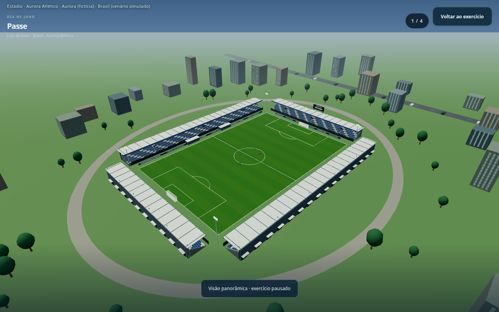
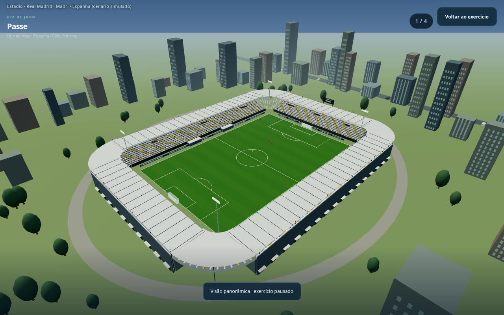
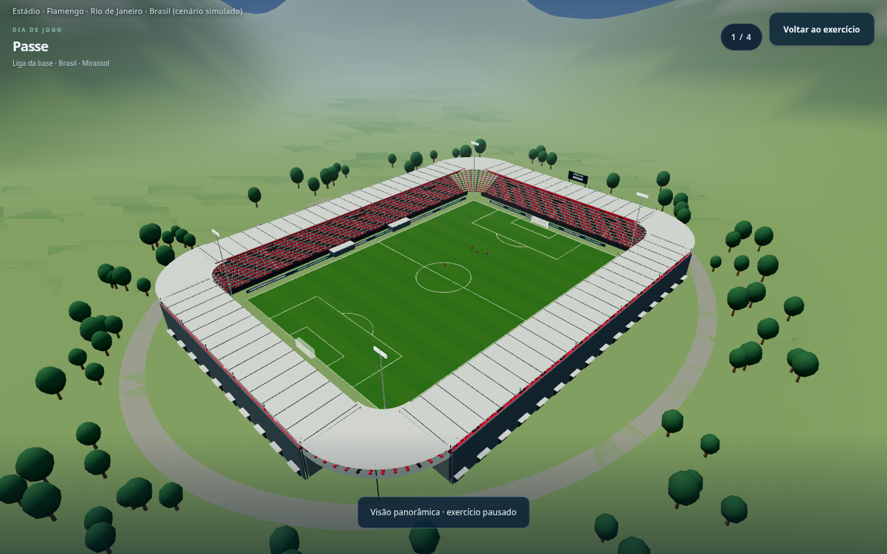
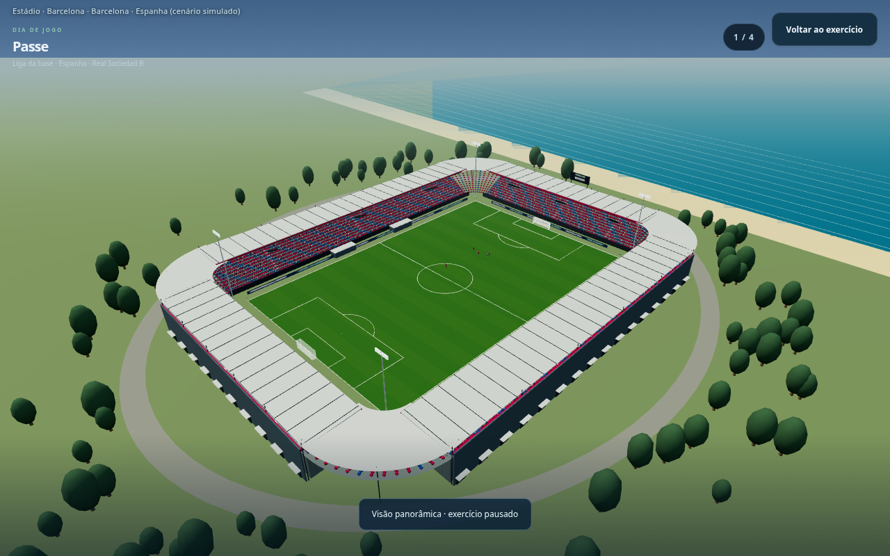
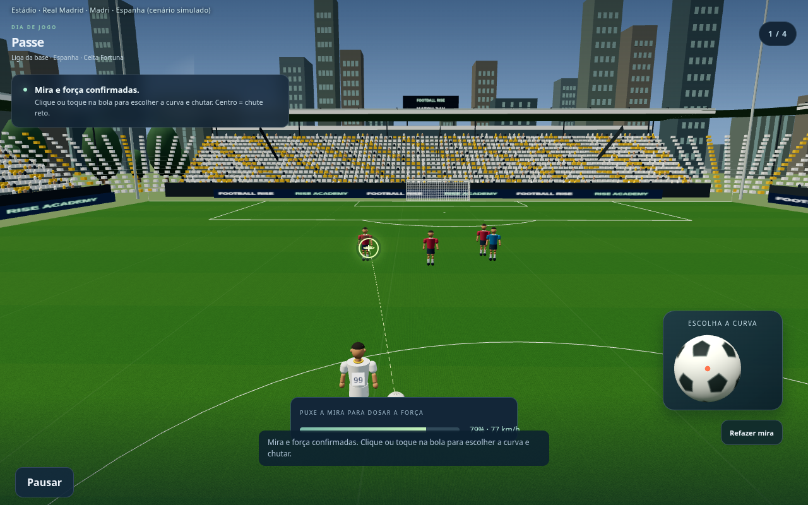
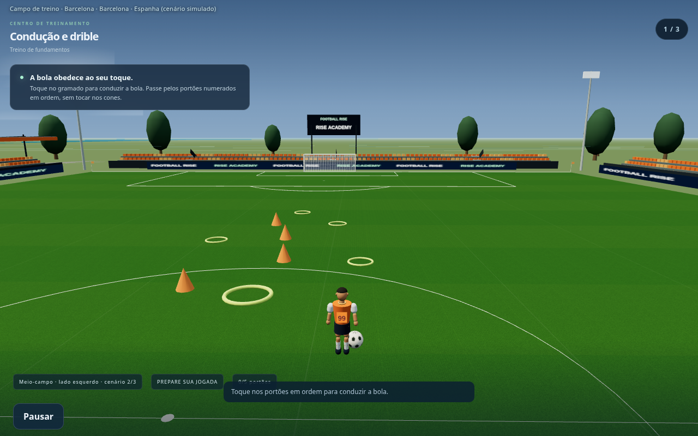
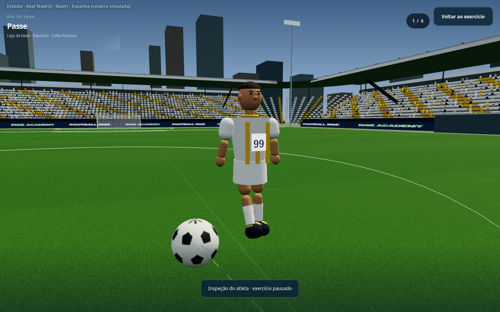
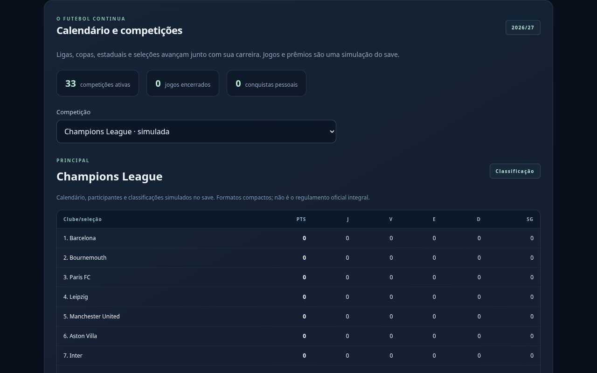
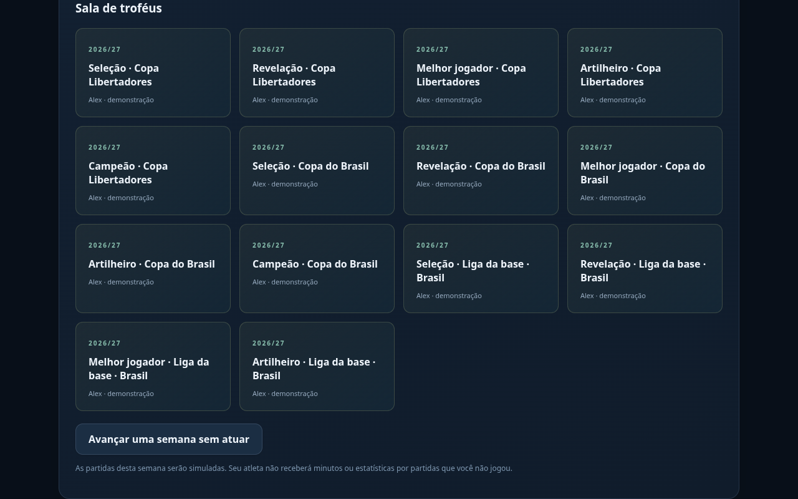

Football Rise — prévias
Versão em desenvolvimento. Jogo público ainda não atualizado.
Estádio pequeno no interior

Arena urbana

Estádio com montanhas

Estádio no litoral

Mira e campo

Treino no meio-campo

Detalhes do jogador

Calendário e competições

Premiações — carreira de demonstração
